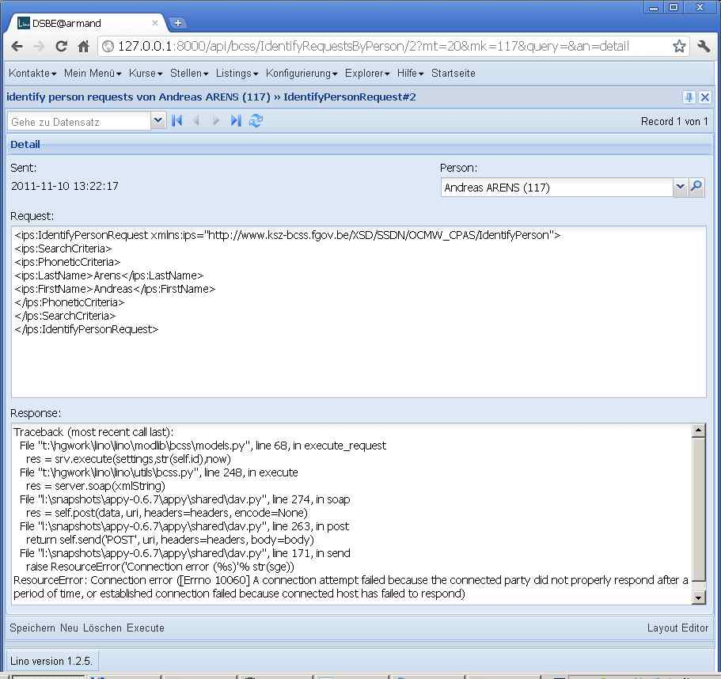

20111110¶
BCSS connection (continued)¶
The next step in connection to the BCSS is done! The idea is to have a kind of “BCSS explorer” which serves in a first phase to experiment with real requests to the BCSS test server.
Concretely we have now a new model
lino.modlib.bcss.models.IdentifyPersonRequest
which is a slave of Person and becomes visible as a new tab “BCSS”
in the Person’s Detail window.
This tab shows a list of “IdentifyPerson” requests about this person.
Users can manually create a request.
For the IdentifyPerson service there’s no need for additional user input. If the Person has her national_id field filled, the request whill do a verification of the personal data, Otherwise it does a search request on the person’s last_name, first_name and (if filled) birth_date and gender fields.
When the user clicks on the “Execute” row action, Lino will
- fill the request_xml field with the XML that has been sent
- try a connection to the BCSS server (as configured in
lino.Lino.bcss_user_paramsandlino.Lino.bcss_soap_url) - upon success, write the response’s raw XML to response_xml field
- if the connection fails, Lino writes the exception traceback into the XML response field
A first test from my workstation failed of course because the connection is secured and will work only when run from the customers network. :
New module lino.modlib.bcss.
Note that this remains separated from lino.utils.bcss
for people who don’t use Lino but want to make BCSS requests using Python).
The docstrings of lino.utils.bcss and lino.utils.xmlgen
contain a general Lino-independant test suite.
TODO: write also tests for lino.modlib.bcss.
Release in Eupen¶
Installed /releases/2011/1110 in Eupen.
Es fehlten noch ein paar Übersetzungen
Remove “-”, ” ” and “=” from national_id before performing the request. Because the length of a NISS appearently must be 11 numeric positions.
The following traceback was not solved by upgrading
appyto 0.7.0:Traceback (most recent call last): File "/var/snapshots/lino/lino/modlib/bcss/models.py", line 70, in execute_request res = srv.execute(settings,str(self.id),now) File "/var/snapshots/lino/lino/utils/bcss.py", line 246, in execute server = Resource(settings.LINO.bcss_soap_url,measure=True) File "/var/snapshots/appy-current/appy/shared/dav.py", line 142, in __init__ else: raise 'Wrong URL: %s' % str(url) TypeError: exceptions must be old-style classes or derived from BaseException, not strThe bugfix is to replace, in appy/shared/dav.py, the following line:
urlRex = re.compile(r'http://([^:/]+)(:[0-9]+)?(/.+)?', re.I)
by:
urlRex = re.compile(r'http[s]?://([^:/]+)(:[0-9]+)?(/.+)?', re.I)
Now I reached the point where I get “An error occurred during the parsing of the request header. Please check your message format.” Added a log info message that logs the complete raw XML request.
Now it would be helpful to ask whether the BCSS team can provide a more detailed error message.

{kind=link}
{kind=link}